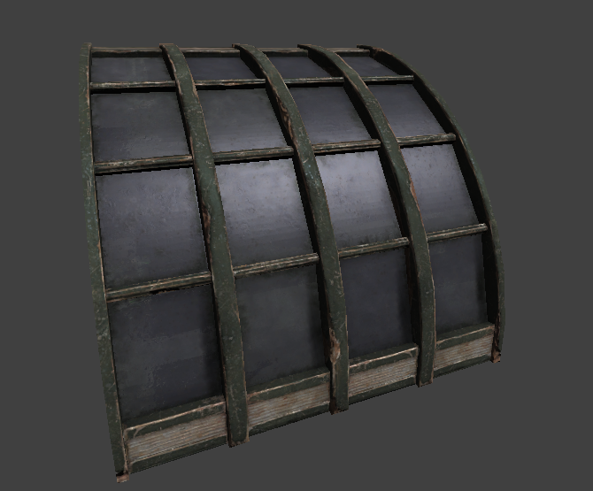
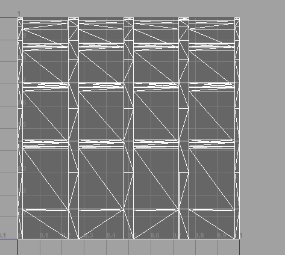
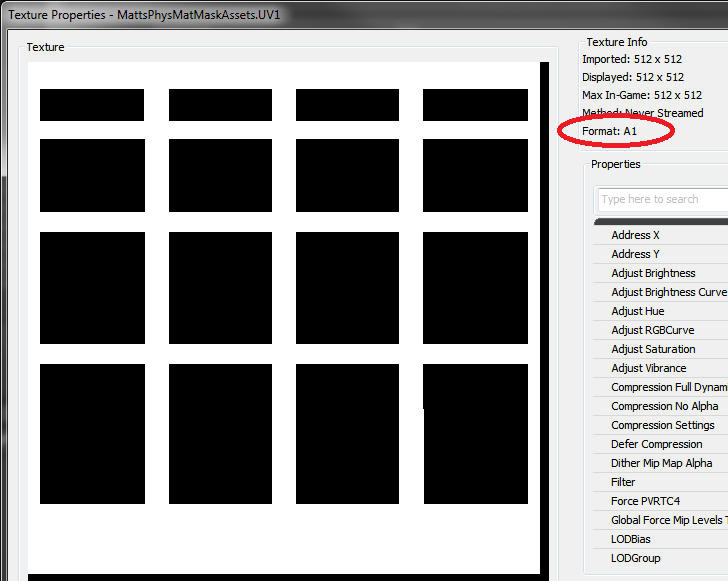

UDN
Search public documentation:
PhysicalMaterialMask
日本語訳
中国翻译
한국어
Interested in the Unreal Engine?
Visit the Unreal Technology site.
Looking for jobs and company info?
Check out the Epic games site.
Questions about support via UDN?
Contact the UDN Staff
中国翻译
한국어
Interested in the Unreal Engine?
Visit the Unreal Technology site.
Looking for jobs and company info?
Check out the Epic games site.
Questions about support via UDN?
Contact the UDN Staff
Physical Material Masks
Overview
A physical material mask provides the ability to use two physical materials on different parts of a graphical material. A physical material mask can be used to create unique effects on a static mesh without the need for multiple elements and materials. A simple example is a window mesh that has a material which is partly wood (for a window frame) and partly glass (for a window). You can set up a physical material mask to play a glass breaking sound when the glass part of the material is hit, and a wood cracking sound when the wood part of the material is hit.
Using Physical Material Masks
Physical material masks consist of four properties on Materials or Material Instances.
- Phys Material Mask - This is a one bit texture that serves as a mask. The physical material used depends on a the color (black or white) of a hit pixel during a collision.
- Phys Material Mask UVChannel - This is the UV channel that should be used for the masked texture. This UV channel should contain the texture coordinates used to map the mask texture to a specific static mesh.
- Black Physical Material - The physical material to use when the black portion of the mask texture is hit during a collision.
- White Physical Material - The physical material to use when the white portion of the mask texture is hit during a collision.
One bit monochrome textures
A one bit monochrome texture is a texture where each pixel is represented by one bit. If the bit is 0, the pixel is black and if the bit is 1 the pixel is white. When a collision with a static mesh occurs, the physical material mask system uses this texture to decide which physical material to use.
Importing one bit textures
There are two ways to import a one bit texture.- You can use an imaging program such as Adobe Photoshop which supports saving one bit bmp formatted textures. You can then import the bmp file like normal into the editor and it will automatically detect it as a one bit texture.
- You can import a 32 bit texture with your physical material mask in the alpha channel. When the texture import dialog appears, under the compression settings category select TC_OneBitMonochrome. You can also chose this compression setting later in the texture viewer.
Example setup
This is an example setup using the following window mesh.  The first thing I did before importing the mesh, is to create a set of UV coordinates for the mask texture. This workflow is exactly the same as creating UVs for any mesh you import. You don't have to do this if the default set of texture coordinates in UV channel 0 are acceptable. These are the UV coordinates I have created which are in UV channel 1 of the mesh:  Then I used an image editing program such as Photoshop to create my one bit texture which I then imported to the editor.  The black areas represent the windows and the white areas represent the frame. Also note the red circle. The format for this texture is A1 which must be the format of the mask texture for physical material masking to work. This is what the mask would look like if it were mapped on the window mesh:
How it works
When a line check hits a static mesh, Unreal finds the triangle that was hit and the graphical material on that triangle. If the material has valid physical material mask settings, a texture lookup is done into a one bit texture to find what pixel was hit. If the pixel is black the line check returns the black physical material. If the pixel is white, the line check returns the white physical material. Your game must have proper code setup to use physical materials returned from line checks in order to see results from physical material masks.
Notes:
- When using physical material masks on material instances, you can override only portions of the physical material mask on the instance. The non-overridden parts will be found by looking at the material instances parent.
- A1 formatted textures do not use GPU memory, only system memory. They are never mipmapped and are never streamed.